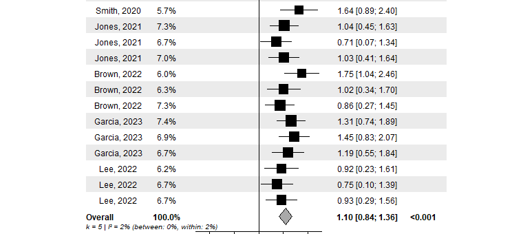
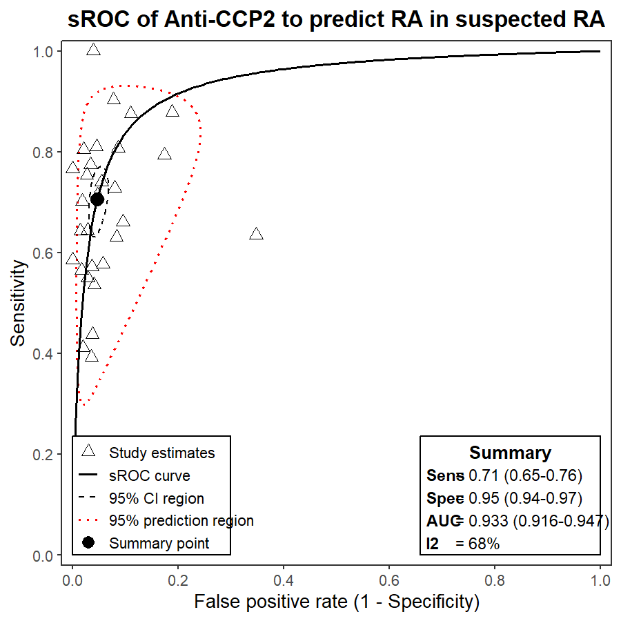

01
Who am I?
Final-year medical student at UFCSPA with a research trajectory spanning cardiology, hepatology, gastroenterology, and neurology.
Medical student in its last graduation year with a 30 paper PubMed portfolio, two open-source R packages, and 79+ recorded teaching sessions on meta-analysis methodology. I combine clinical training with graduate-level statistical methods and production-grade programming. I search for research positions where workflows productions are needed to be developed.
A guided snapshot of where I am, what I do, and what kind of research position collaboration I am looking for.
Final-year medical student at UFCSPA with a research trajectory spanning cardiology, hepatology, gastroenterology, and neurology.
I build evidence-synthesis projects from protocol to manuscript, combining clinical reasoning, advanced meta-analysis methods, and reproducible R/Python workflows.
To become the kind of clinical researcher who can turn hard medical questions into transparent statistical models, reusable code, and publishable evidence.
A research position or funded PhD with a PI who needs a medical doctor profile that can read the clinic, write the code, and ship the paper.
I am a final-year medical student at UFCSPA with a research trajectory that started early and accelerated fast. My work spans cardiology, hepatology, gastroenterology, and neurology — always at the intersection of clinical questions and rigorous quantitative methods.
What distinguishes me from a standard medical student researcher: I write the code. I build and maintain open-source R packages for the exact methods I apply in papers. I have designed and executed network meta-analyses, GLMM-based diagnostic accuracy syntheses, Bayesian evidence models, and three-level hierarchical meta-analyses — and can hand a PI reproducible, documented pipelines on day one.
I am actively looking for a research position or funded PhD with a PI who values methodological rigor and a collaborator who can run from protocol to published code.
Methodological anchors, programming languages, and soft skills.
28 PubMed-indexed papers across cardiology, gastroenterology, and more.
Open-source tools for reproducible evidence synthesis.
Implements three-level meta-analytic models for clustered and hierarchically structured study data — the case where multiple effect sizes come from the same study or research group. Handles variance decomposition across levels with full forest plot output.

devtools::install_github("vanioljantunes/meta3l")
User-friendly interface for diagnostic test accuracy meta-analysis. Implements bivariate GLMM and HSROC models for pooling sensitivity and specificity across studies. Designed to lower the barrier for clinical researchers performing DTA syntheses in R.

devtools::install_github("vanioljantunes/easydta")
Methods applied in published work — not just listed on a CV.
Bilingual (EN/PT) systematic review and meta-analysis curriculum, built and led from scratch.
End-to-end program from viability assessment → protocol design → screening/extraction → statistical synthesis → reporting. Aligned with the Cochrane Handbook, implemented in R.
Individual mentoring sessions for researchers and medical students conducting their first systematic review or meta-analysis — from topic selection through to manuscript submission.
Not one-off lectures. Structured evaluation checkpoints guide learners from novice to reproducible R-based synthesis. Reusable templates reduce friction and ensure consistency.
Built the full delivery pipeline: planning → slide production → recording → editing → hosting → distribution. Operational from day one — not a prototype.
Looking for a research position or funded PhD opportunity with a PI working in clinical epidemiology, evidence synthesis, or methods development.